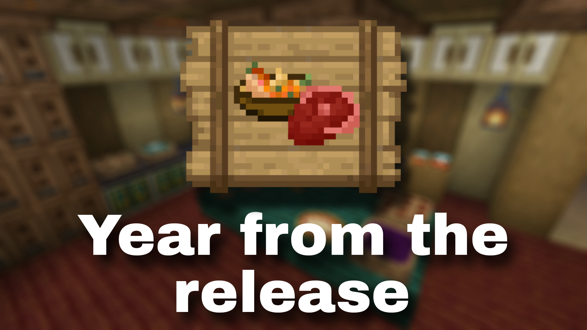

<!DOCTYPE html>
<html lang="en">
<head>
  <link rel="icon" href="../img/themes/active/favicon.png">
  <title>Year from the release of Ice and Fire Delight | Blog | Donne431</title>
  <meta name="viewport" content="width=device-width, initial-scale=1, maximum-scale=1" />
  <meta name="title" content="Year from the release of Ice and Fire Delight | Blog | Donne431">
  <meta name="description" content="Welcome to my website! I am Donne431, just a guy, who love made a modifications for games. I'm 16 years old, and I'm from Crimea, Russia (demi-island washed by the Black and Azov Sea). I also like to create almost any content for Minecraft, that is: mods, maps, resource packs, servers.">
  <meta name="keywords" content="Minecraft, Forts, Mods, Resourcepacks, Datapacks, Donne431">
  <meta name="theme-color" content="#4bb4f1">


  <script src="https://code.jquery.com/jquery-3.3.1.min.js"></script>
  <script src="https://cdn.jsdelivr.net/npm/handlebars@latest/dist/handlebars.js"></script>
  <script src="https://mcapi.us/scripts/minecraft.min.js"></script>
  <script src="../js/main.js"></script>
  <script src="../config.js"></script>
  <script src="../js/lightbox.min.js"></script>

  <script>tosAgreed = true</script>

  <link rel="stylesheet" href="https://cdnjs.cloudflare.com/ajax/libs/font-awesome/6.7.1/css/all.min.css"/>
  <link rel="stylesheet" href="../css/style.css">
  <link rel="stylesheet" href="../config.css">
  <link href="../css/lightbox.css" rel="stylesheet" media="all">

</head>


<body>

  <div id="target"></div>

  <script id="template" type="text/x-handlebars-template">

  <header>
    <div class="hero" id="hero">
      <a href="#!"><h1 style="padding-top: 3%;"></h1></a>
    <p> </p>
    <div class="news-card" align="center">
      <a href="../" class="btn"><i class="fa-solid fa-house"></i> Home</a>
      <a href="../blog" class="btn"><i class="fa-solid fa-newspaper"></i> Blog</a>
      <a href="#links" class="btn"><i class="fa-solid fa-share"></i> Links</a>
    </div>
    <p> </p>
    </div>
  </header>

  <section class="dark" id="blog">
    <h1><i class="fa-solid fa-newspaper"></i> Blog</h1>
    <div id="news">
    <div class="news-card" align="center">
    <a>MISC</a><br>
    <a href="../img/blog/iafd-1year/preview.png" data-lightbox="roadtrip"></a>
    <h1 align="center">Year from the release of Ice and Fire Delight</h1>
    <i>13.04.2025, 20:00</i><br>
    </div>
    <p>
    Hello to all the readers of this post!<br><br>

    I'm happy to tell you some good news - <a href="../img/projects/ice_and_fire_delight/logo_cutted.png" data-lightbox="roadtrip"></a> Ice and Fire Delight is a whole year old! Yeah, it's been a whole year since I decided to publish this mod to the public (well, not counting Discord), and in that time the mod has accumulated a total of over 110k downloads! This, to put it mildly, amazes me, but I am amazed not only that the mod, which I seem to have started doing only yesterday already a year, but also that it has been 2 years and 3 months since the release of my first mod for Minecraft - <a href="../img/projects/national_anthems/logo.png" data-lightbox="roadtrip"></a> National anthems. <br> <br>
    Honestly, I want to believe that in the future I will release and support more mods, I will start supporting my old projects, but most importantly, I hope that PayPal, Mastercard and Visa will return to the Russian Federation (the country where I live), because in fact from the mods I do not earn anything, although the money and accumulate on my account. Right now I do and support mods on pure enthusiasm, which seems to be good, but enthusiasm is not eternal, all my other projects I did also on enthusiasm, the same <a href="../img/projects/national_anthems/logo.png" data-lightbox="roadtrip"></a> National anthems and <a href="../img/projects/classic_musical_discs/logo.png" data-lightbox="roadtrip"></a> Classic Musical Discs, but as you can see, now they are frozen until the moment when all 3 services that I named earlier will not return to Russia. <br> <br>
    And to be honest, making mods on a decrepit laptop that doesn't even pull most games that came out before the laptop itself was created is frankly difficult. In fact, it's my own fault that I didn't start earning money for a normal computer, but in my defense I can say that I'm just a lazy mediocrity with a terrible memory and a lot of other defects and I just can't and don't want to sweat it too much.


   <!--
    Привет всем читателям этого поста!

    Я рад сообщить вам одну приятную новость - <a href="../img/projects/ice_and_fire_delight/logo_cutted.png" data-lightbox="roadtrip"></a> Ice and Fire Delight исполнился уже целый год! Да, прошёл целый год с момента как я решил опубликовать данный мод в открытый доступ (ну не считая дискорда), за это время у мода собралось в сумме более 110к скачиваний! Это, мягко говоря, меня поражает., но меня поражает не только то, что мод, который я вроде начал делать только вчера уже год, а ещё и то, что прошло уже 2 года и 3 месяца с релиза моего первого мода для Minecraft - <a href="../img/projects/national_anthems/logo.png" data-lightbox="roadtrip"></a> National anthems. Честно, хочется верить, что в будующем я буду выпускать и поддерживать больше модов, начну поддерживать свои старые проекты, но самое главное, я надеюсь, что Paypal, Mastercard и Visa вернутся в РФ (страна, где я проживаю), потому что по сути с модов я ничего не зарабатываю, хотя деньги и копятся у меня на аккаунте. Прямо сейчас я делаю и поддерживаю моды на чистом энтузиазме, что вроде бы хорошо, но энтузиазм не вечен, все мои другие проекты я делал также на энтузиазме, тот же <a href="../img/projects/national_anthems/logo.png" data-lightbox="roadtrip"></a> National anthems и <a href="../img/projects/classic_musical_discs/logo.png" data-lightbox="roadtrip"></a> Classic Musical Discs, но как вы видите, сейчас они заморожены до того момента, когда все 3 сервиса, которые я назвал ранее, не вернутся в РФ. Да и честно говоря, делать моды на дряхлом ноуте, которые не тянет даже большинства игр, вышедший до создания самого ноута, откровенно сложно. По сути я сам виноват, что не начал зарабатывать деньги на нормальный комп, но в своё оправдание могу сказать, что я просто ленивый бездарь с прям ужасной памятью и множеством иных дефектов и я просто не могу и не хочу слишком сильно париться.
   -->
    </p>
    <p align="center"><i class="fa-solid fa-user"></i> Donne431 (Author)</p>
    </div>
  </section>
  <section class="dark">
    <div class="news-card" align="center">
    <a href="../blog/unfreezing-projects.html" class="btn2"><i class="fa-solid fa-arrow-left"></i> Previous post</a>
    <a href="../blog" class="btn2"><i class="fa-solid fa-newspaper"></i> Back to Blog</a>
    <a href="../blog/iafd-curseforge-100k.html" class="btn2"><i class="fa-solid fa-arrow-right"></i> Next post</a>
    </div>
  </section>

  <section class="light">
    <h1><i class="fa-solid fa-share"></i> Links</h1>
    <div id="links" align="center">
      <a href="https://discord.gg/NQBhQRDEhF"></a>
      <a href="https://www.curseforge.com/members/donne431/projects"></a>
      <a href="https://modrinth.com/user/Donne431"></a>
      <a href="https://github.com/Donne431"></a>
      <a href="https://www.donationalerts.com/r/donne431"></a>
    </div>
  </section>

  <footer>
    <a>&copy; {{server_port}} {{server_name}}. All Rights Reserved.</br>{{server_name}} is not affiliated with or endorsed by Mojang Studios or Microsoft<br>{{server_ip}}</a>
    <a></a>
    
  </footer>
  </script>
  <script src="../js/license.js"></script>

</body>
</html>
